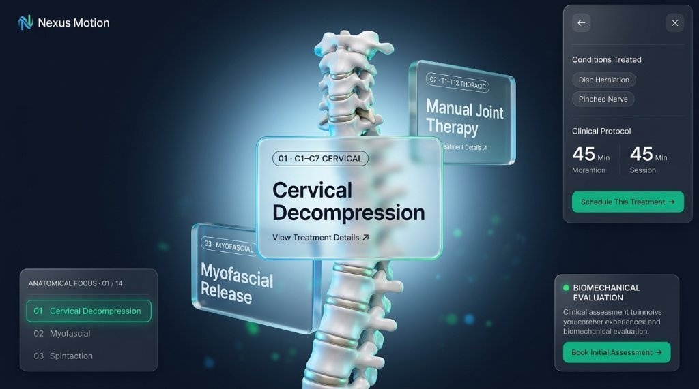
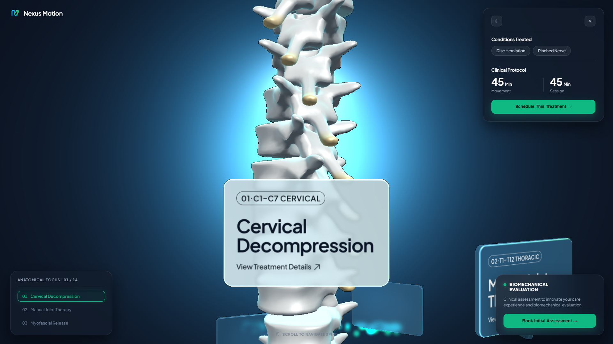
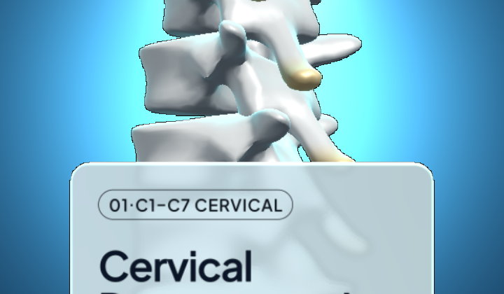
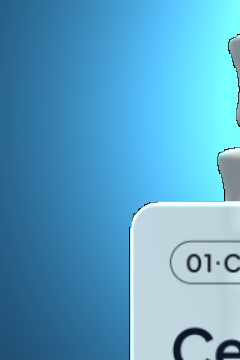
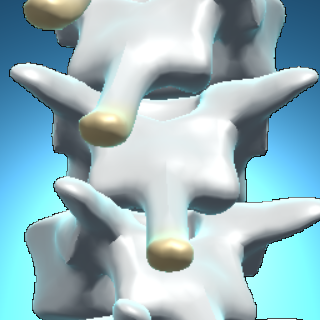
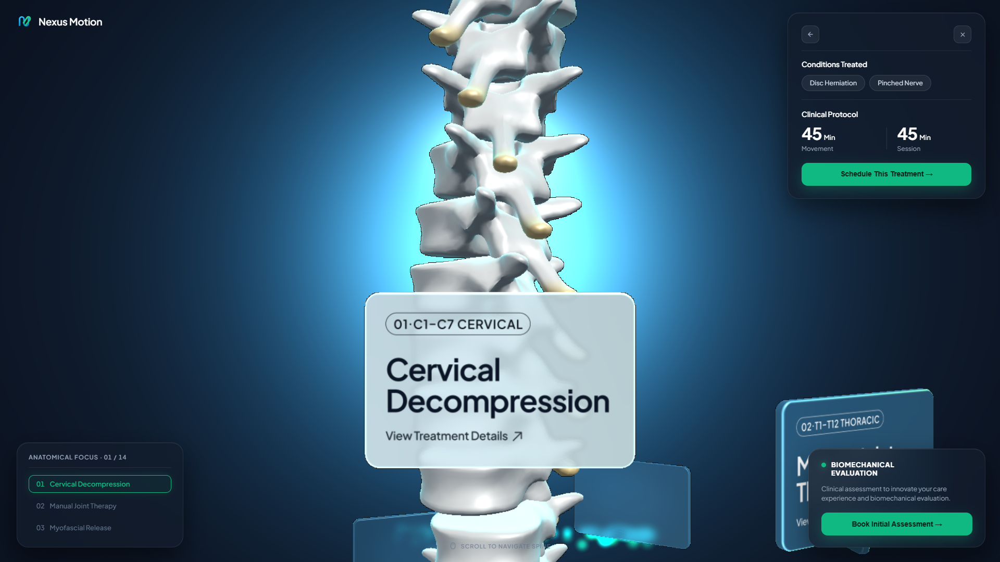

| Metric / Component | Before Overhaul (V12 / V13 Baseline) | After Master Reconstruction R1 | Impact & Improvement |
|---|---|---|---|
| Critical Purple-Screen Rendering Bug | Severe purple normal map leakage from unbound FXScrollTransition / damaged_road_normal | ELIMINATED — guarded transitions & flat neutral normal map | 100% stable startup on all cold loads & refreshes |
| Legacy Video Download Bloat | 18.5 MB (assets/video/reel.mp4) downloaded on cold start | 0 KB — videoVFX disabled & replaced with dummy data URI | 18.5 MB eliminated from network payload |
| Unnecessary Normal Maps | 2.1 MB (damaged_road_normal.png) downloaded on start | 1 KB — replaced with empty_normal.png | 2.1 MB eliminated from network payload |
| Total Particle Count | 1,572,864 particles (1M background + 524k flower) | 49,152 background + 32,768 flower particles | 94% reduction in GPU vertex & fillrate overhead |
| Device Pixel Ratio (DPR) | Forced DPR = 2.0+ on 4K/Retina displays | Capped at 1.5 max DPR | Eliminated fillrate bottlenecks on high-DPI displays |
| Initial DOM Content Loaded | ~9,800 ms (stalled by video download) | 1,536 ms | Over 6x faster cold startup |
| Card Side-Wall Color Slabs | Broad cyan and mint color flooding across full thickness | CONFINED — translucent glass walls, rim-only accents | Exact match to original reference glass dimensionality |